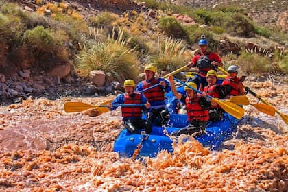
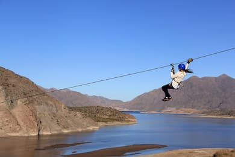
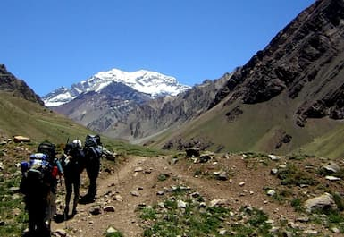
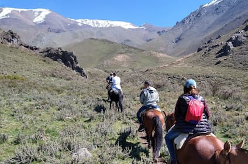
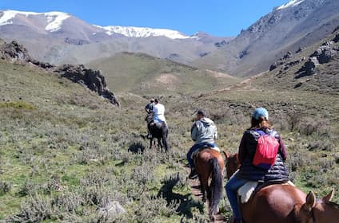
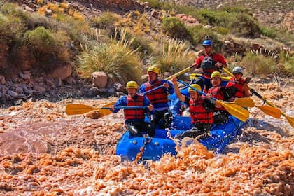
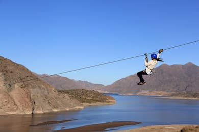
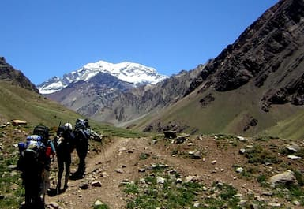
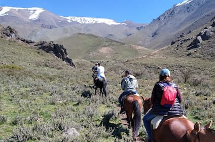

Actividades adrenalinicas en Potrerillos
En potrerillos podrás encontrar gran variedad de actividades para realizar como las siguientes:
  .jpg) 


Una de las mejores excursiones en Mendoza es recorrer la ruta 7, bordeando altas montañas hasta el límite con Chile. Con este tour de alta montaña por los Andes conocerás el dique de Potrerillos, la localidad de Uspallata, el emblemático Puente del Inca, el mirador del cerro Aconcagua. Por último, se hará impresionante ascenso hasta el Cristo Redentor, situado entre la frontera de Chile y Argentina y con unas vistas espectaculares de la Cordillera de los Andes.
¿Preparados para un día en medio de la naturaleza? Una de las mejores excursiones en Mendoza es llegar hasta los alrededores de la ciudad de San Rafael, para conocer el embalse de Valle Grande junto con el Cañón del río Atuel. Conocerás las curiosas formaciones rocosas producidas por la erosión y uno de los paisajes más bellos de la provincia de Mendoza.
Partiendo desde Mendoza capital por la ruta 82 y bordeando el río Mendoza, llegarás hasta la pequeña localidad de Cacheuta, famosa por el complejo de agua termal. Luego se pasará por el majestuoso túnel de Cacheuta para divisar la represa de Potrerillos junto con el gran lago rodeado de montañas. Por último, una visita al Gran Hotel de Potrerillos a orillas del lago.
Una de las mejores excursiones en Mendoza en conocer la Reserva Villavicencio. En este tour visitarás el centro de interpretación para conocer más acerca de la flora y fauna del lugar y te adentrarás en los preciosos jardines del emblemático Hotel Termas de Villavicencio. Por último, te espera una subida serpenteante a 3000 metros de altura en la denominada ruta de los Caracoles.
Conocer el cerro Aconcagua de cerca es uno de las mayores atracciones que ver en Mendoza. Este tour te lleva hasta el parque Provincial Aconcagua para realizar una ruta de trekking de baja dificultad física y admirar las vistas de la montaña más alta de América. En el recorrido podrás contemplar la Laguna Horcones y todo el entorno montañoso que rodea el parque. Además te espera un picnic con empanadas, frutas, alfajores y como no puede ser de otra manera, vino mendocino.
En potrerillos podrás encontrar gran variedad de actividades para realizar como las siguientes:
  
